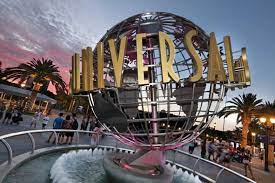

Travel
Yellowstone National Park

yellowstone_cauldron.gif

yellowstone_cauldron.jpg
Geographical Location
Yellowstone National Park is located in the United States. It is mostly within Wisconsin, with parts in Montana and Idaho.
Yellowstone is the world's first national park! It covers 2.2 million acres of land. Yellowstone National Park was established on March 1, 1872 under the Yellowstone Natinoal Park Protection Act signed by President Ulysses S. Grant. The park is known for its natural beauty and diverse wildlife.
Organized exploration of the land did not begin until the 1860s. It is important to note Native populations have lived on the land for over 11,000 years, way before it was designated as a national park.
Photo Gallery


The drive to Lamar Valley requires some dangerous roads. But the result is amazing sunset views.
If you can handle the odor, the Yellowstone Sulphur Springs is a great place to hike.

Mammoth Hot Springs has a number of actively forming Travertine terraces.
The buffalo were so common along the roads in Yellowstone that our mantra became "If it ain't lickin the car, we aren't stopping."
Colleen van Lent
Prague
prague.gif

prague.JPG
Geographical Location
Prague, the capital city of the Czech Republic, is situated in the heart of Europe along the Vltava River.
Its picturesque and strategic location has earned it the nickname "City of a Hundred Spires," with a skyline dominated by historic castles, bridges, and Gothic and Baroque architecture.
Photo Gallery

Installed in the Old Town Square, the Astronomical Clock is a medieval marvel that dates back to the 15th century.
The heart of Prague's historic district, the Old Town Square is surrounded by colorful Baroque buildings
The Vltava is the longest river in the Czech Republic, and it plays a significant role in shaping the landscape of Prague.
This iconic bridge, adorned with statues of saints, spans the Vltava River and connects the Old Town with Prague Castle. It offers breathtaking views of the city and is a popular spot for artists, musicians, and tourists.
Xuechun Wang
Los Angeles
los_angeles.gif

city_view.jpeg
Geographical Location
Los Angeles is situated in Southern California, USA, along the Pacific Ocean.
Renowned for its Mediterranean climate, the city sprawls across a diverse landscape, encompassing coastal areas, mountain ranges such as the Santa Monica Mountains, and iconic neighborhoods like Hollywood and Beverly Hills.
Photo Gallery

a vibrant and dynamic urban center, is characterized by its iconic skyline, cultural institutions like the Walt Disney Concert Hall and The Broad Museum, and a mix of historic and modern architecture.
a world-renowned district in Los Angeles, is synonymous with the global entertainment industry, hosting the historic Hollywood Walk of Fame, iconic landmarks like the Hollywood Sign, and serving as the hub for the American film and television business.
a premier film and entertainment studio, doubles as a thrilling theme park where visitors can experience immersive movie-themed attractions, iconic studio tours, and live shows, making it a must-visit destination for movie enthusiasts and families alike.
The sunset in Los Angeles paints a mesmerizing panorama over the Pacific Ocean, casting a warm glow that silhouettes the iconic palm trees and cityscape, creating a breathtaking and quintessentially Californian evening scene.
Xuechun Wang